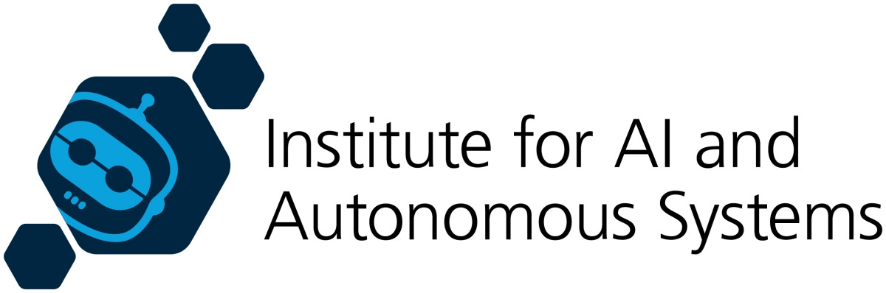

Workshop on Explainability, Cognition & Embodied AI in Human-Robot Collaboration at ERF 2026
In-person workshop at ERF 2026 in Stavanger, Norway (March 23-27, 2026)
| Home | Speakers | Schedule | Organisers |
Imagine robots that don’t just act intelligently, but can explain why, adapt anywhere and scale seamlessly from the lab to the real world. Many cutting-edge systems remain black boxes, leaving users guessing about their decisions.
Sometimes, even advanced architectures struggle to perform reliably outside controlled environments.
In this workshop, we will explore how cognitive techniques can be combined with explainability mechanisms to create robots that are smart, trustworthy and capable of operating at scale across diverse tasks and environments.
We won’t be sitting through slides!
Instead, expect an interactive, fast-paced session where participants collaborate on concrete scenarios.
Through group sessions, scenario mapping and cross-theme exploration, we will dig into the trade-offs and hidden synergies across explainability, scalability and embodiment.
The outcome will be a jointly defined set of research priorities designed to spark fresh thinking and guide the future of intelligent robotics.
|  | |